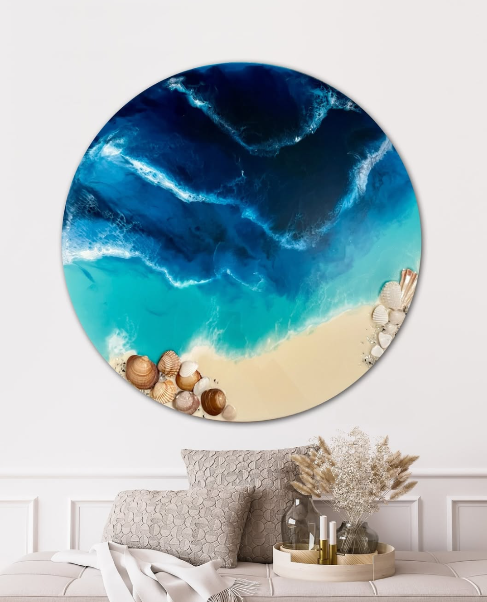
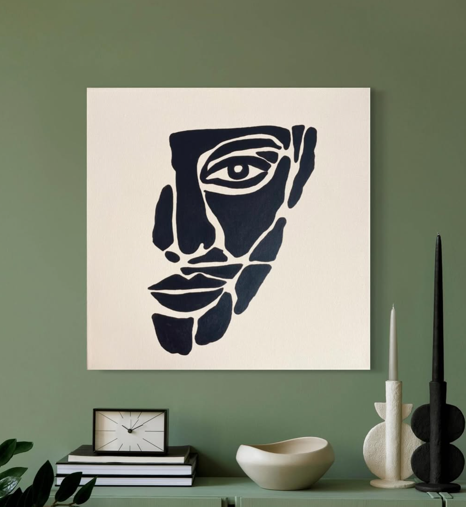
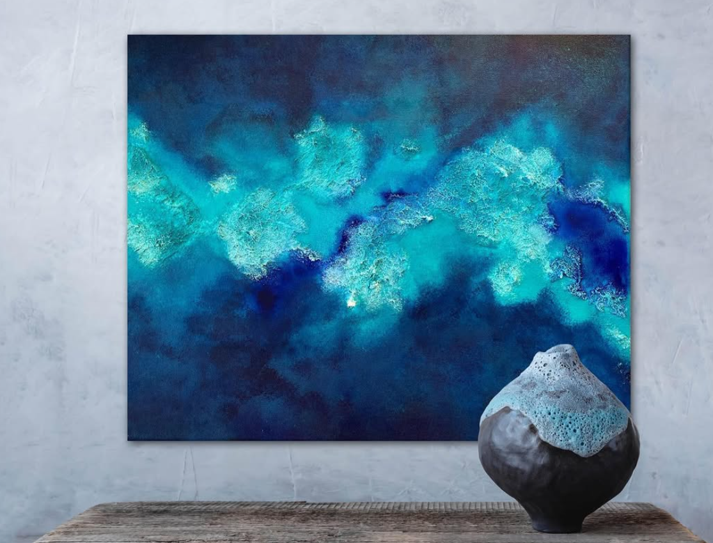
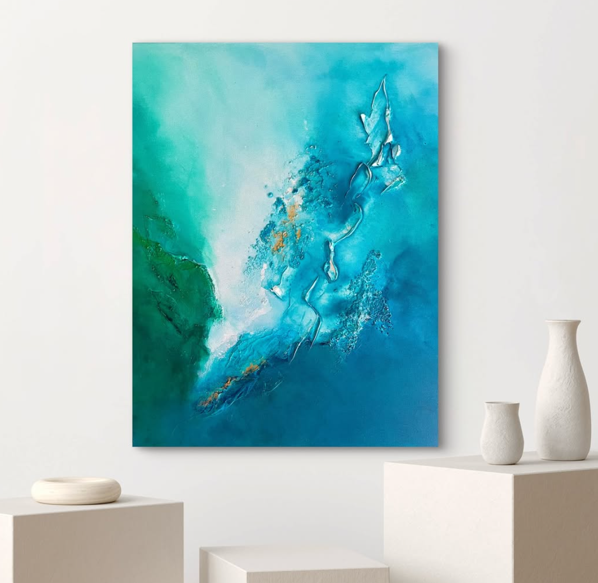
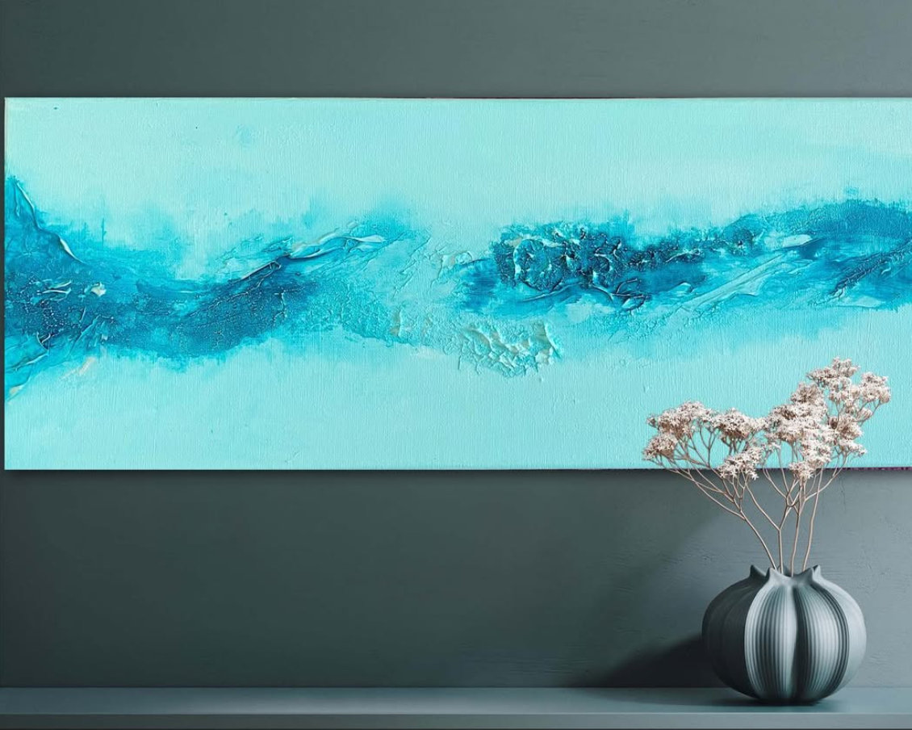
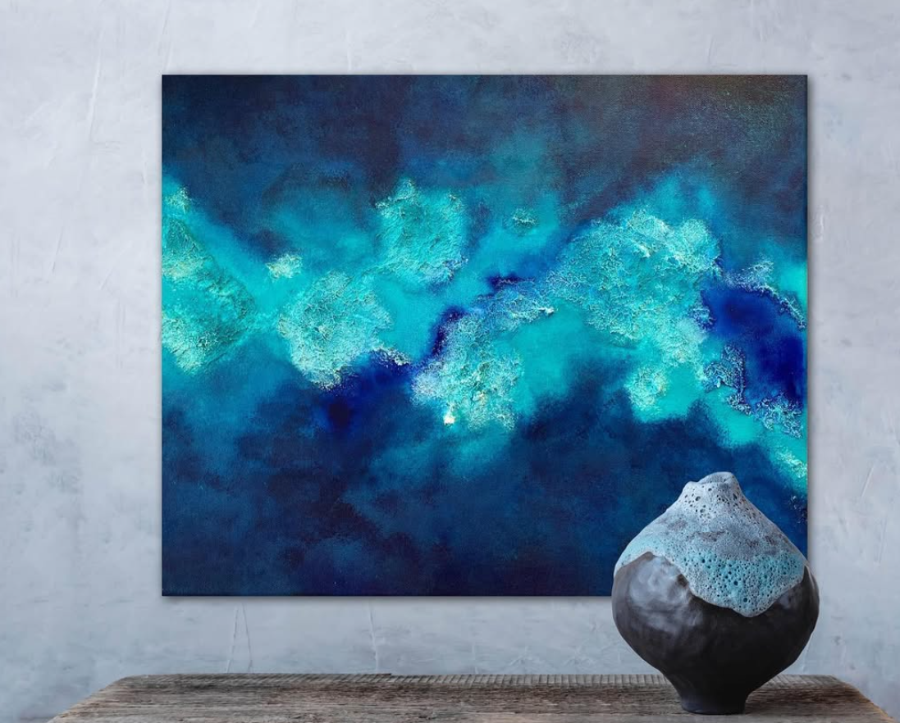

Dragana Marusic
painting · mixed media · resin
Selected works · 2018 — 2026
↓ Enter the studio
VI Chapters · Works since 2018
ChapterI / VI
I
Visage
Faces, in paint and in silhouette
Work 01
Untitled, face study
Acrylic on canvas.
Beograd, 2024.
ChapterII / VI
II
Manifesto
What the work is, in plain wordsWe work in layers. We let the resin choose where to settle, the pigment where to rest. Each painting is a slow agreement between intention and accident. Nothing is rushed. Everything is felt.
— signed
Dragana Marusic, atelier
ChapterIII / VI
III
Series
Resin & ocean — a continuing study
Reef
Beograd · 2024
Rise
Beograd · 2024
Calm
Beograd · 2025
Currents
Beograd · 2025ChapterIV / VI
IV
Letter
From the studio, in long form
Beograd · IV · 2026
The studio is mostly silent. There is the smell of pigment, the slow thickening of resin in the cup, the sound of a brush set down on the table. Painting begins as a question, becomes a conversation, and ends as a kind of patience. We learn most from the canvases that refuse us — those are the ones that teach.
A piece is rarely planned in advance. The first mark is a guess; the second is an answer; the third is the painting beginning to speak for itself. By the end, we are no longer the only ones in the room.
What follows here is a small selection from eight years of looking, listening, and letting the material decide. The favourites have been removed; the favourites are too easy. What remains is harder, slower, and — we hope — more honest.
ChapterV / VI
V
Index
Selected works · hover to look closer- /01 Face, study I MMXXIV
- /02 Two Faces MMXXIII
- /03 Figure, seated MMXXIV
- /04 Blue Field MMXXV
- /05 Tide, tondo MMXXV
ChapterVI / VI
VI
End
Studio · press · inquiriesWORK with us
hello@draganamarusic.studioStudio
Knez Mihailova 32
11000 Beograd
Press
press@draganamarusic.studio
+381 11 000 000